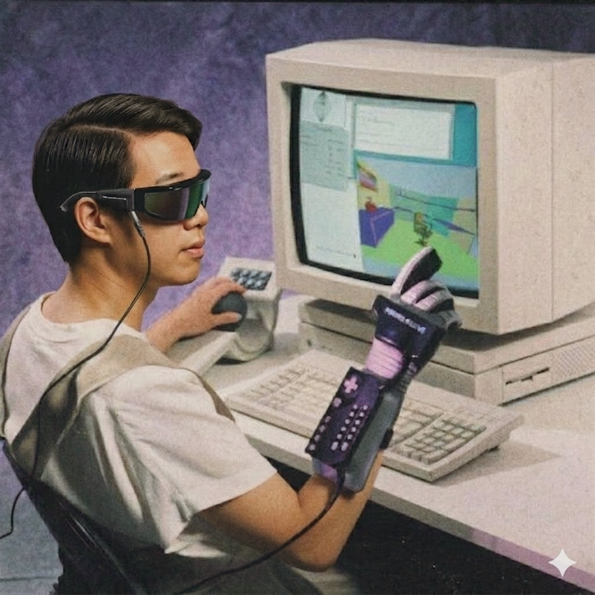

We are living in the sci-fi future we once imagined. In this tech-saturated world, I ask how we can leverage technology to maintain human choices: making the future more accessible, ethical, and playful.

About Me
Product Designer specializing in immersive and playful UX, designing and prototyping experiences that drive engagement, growth and connection.